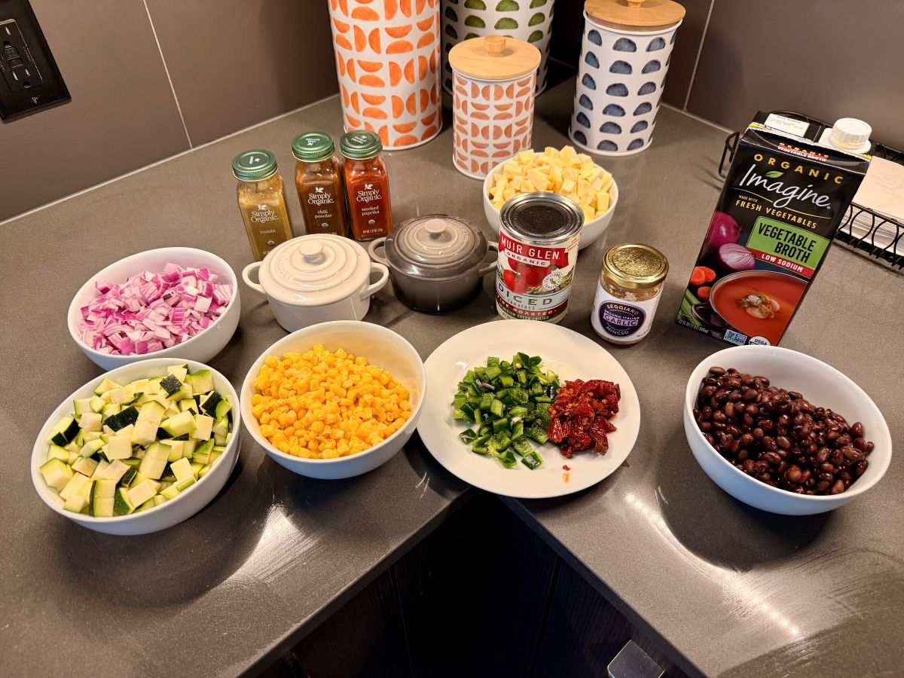
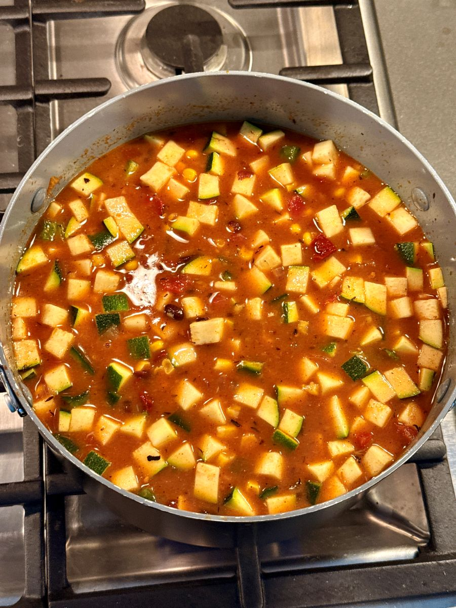

There is a unique rhythm to the "pantry clearing"—that moment when we look at a lone zucchini, stray parsnips, and a half-empty jar of adobo peppers and see not just leftovers, but a blank canvas.
Overview
Every kitchen behaves differently—use your own judgment with ingredients, allergens, and doneness cues.
This dish is a testament to the beauty of spreading your wings in the kitchen. By leaning into the craft of spices and the intuition of the moment, we amped up traditional smoky notes with chipotle and grounded the heat with a secret dash of cinnamon.
The secret to the velvety texture lies in a simple mash of black beans, providing a substantial body without a drop of dairy.
Ingredients

- The Aromatics: 1 large red onion, finely diced; 2 tbsp jarred minced garlic
- The Roots: 4 parsnips (1 large, 3 small), peeled and diced
- The Garden: 1 zucchini, diced; 1 cup corn kernels; 1 poblano pepper, finely diced
- The Smoke: 3 chipotle peppers in adobo (minced) + 4 tbsp adobo sauce
- The Heart: 1 can (15 oz) black beans, rinsed; 1 can (14.5 oz) fire-roasted diced tomatoes
- The Liquid: 6 cups vegetable broth
- The Spice Cabinet: 1 tbsp smoked paprika, 1 tbsp chili powder, 2 tbsp dried thyme, and a generous dash of cinnamon
- The Balance: 1 tbsp honey (the "Hail Mary" for heat control)
Method
1. The Foundation
- Heat a glug of olive oil in a heavy-bottomed pot over medium heat.
- Incorporate the red onion, seasoning with a significant pinch of salt and black pepper. Sauté for 5–7 minutes until soft and translucent.
2. The Roots & Heat
- Add the diced parsnips, stirring for 3 minutes to coat them in the seasoned oil.
- Stir in the minced garlic, diced poblano, and the chipotle peppers.
- Add the smoked paprika, chili powder, thyme, and cinnamon. Stir for one minute to "bloom" the spices.

3. The Integration
- Pour in the fire-roasted tomatoes and the vegetable broth. Add the corn and the zucchini.
4. The Texture Secret
- Take 1/3 of your black beans and mash them into a thick paste.
- Stir both the whole and mashed beans into the pot. This creates a luxurious body without dairy.
5. The Long Simmer
- Bring to a gentle boil, then reduce heat to low. Cover and simmer for one hour.
- At the 45-minute mark, taste. If the chipotle heat is too assertive, stir in the honey.
6. The Rest
- Remove from heat and allow to cool completely before refrigerating.
- A 24-48 hour rest allows the flavors to settle and harmonize.
Tips & Notes
Texture: The mashed bean method provides a rustic, satisfying feel. For a smoother finish, use an immersion blender for a few pulses.
Serving: Garnish with fresh cilantro, crumbled queso fresco, and a sharp squeeze of lime to cut through the smoke.